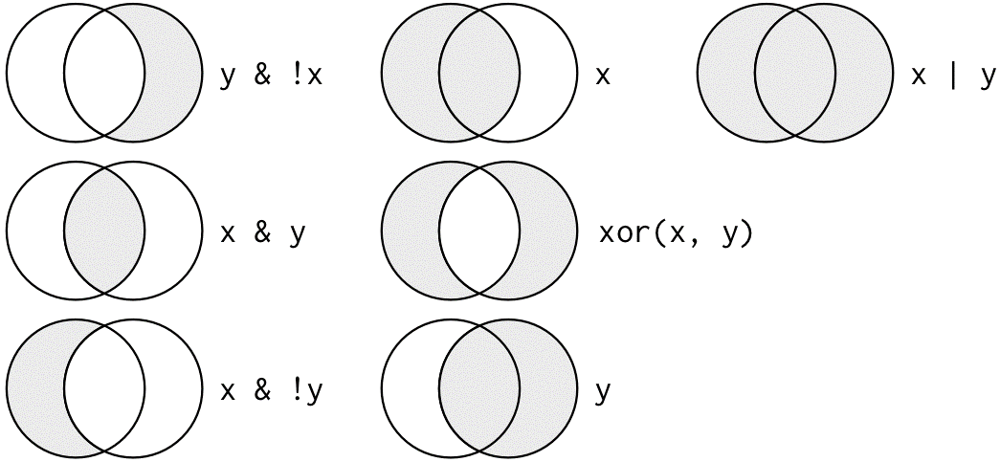
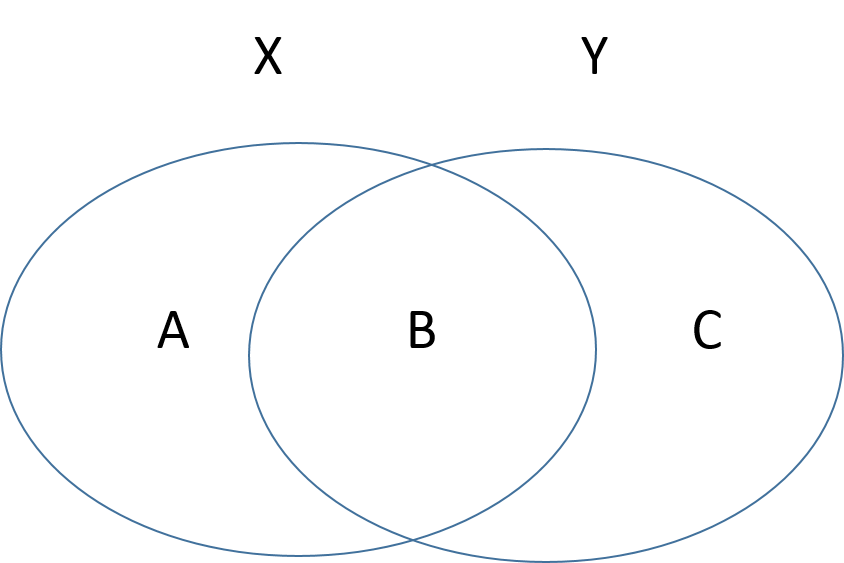
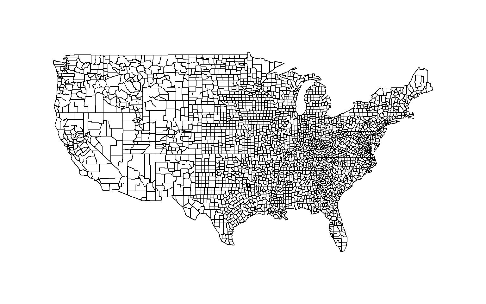
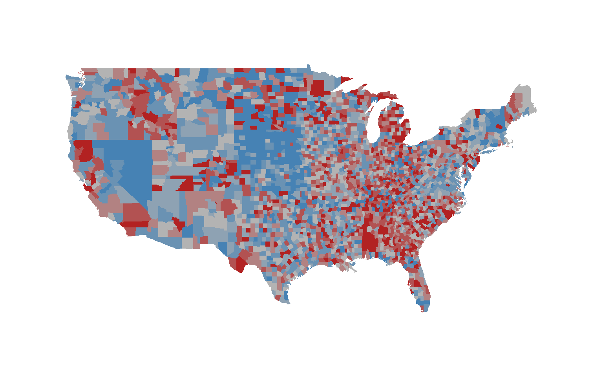

Chapter 5 Merging Data
5.1 Packages Used in This Chapter
5.2 Relational Databases
Modern databases are huge - think about the amount of information stored at Amazon in the history of each transation, the database where Google logs every single search from every person around the world, or Twitter’s database of all of the tweets (millions each day).
When databases become large, flat spreadsheet style formats are not useful because they create a lot of redundant information, are large to store, and are not efficient to search. Large datasets are instead stored in relational databases - sets of tables that contain unique IDs that allow them to be joined when necessary.
For example, consider a simple customer database. We don’t want to store customer info with our transactions because we would be repeating their name and street address every time they make a new purchase. As a result, we store customer information and transaction information separately.
| CUSTOMER.ID | FIRST.NAME | LAST.NAME | ADDRESS | ZIP.CODE |
|---|---|---|---|---|
| 178 | Alvaro | Jaurez | 123 Park Ave | 57701 |
| 934 | Janette | Johnson | 456 Candy Ln | 57701 |
| 269 | Latisha | Shane | 1600 Penn Ave | 20500 |
| CUSTOMER.ID | PRODUCT | PRICE |
|---|---|---|
| 178 | video | 5.38 |
| 178 | shovel | 12 |
| 269 | book | 3.99 |
| 269 | purse | 8 |
| 934 | mirror | 7.64 |
If we want to make the information actionable then we need to combine these datasets. For example, perhaps we want to know the average purchase amount from an individual in the 57701 zip code. We cannot answer that question with either dataset since the zip code is in one dataset, and the price is in another. We need to merge the data.
## CUSTOMER.ID FIRST.NAME LAST.NAME ADDRESS ZIP.CODE PRODUCT PRICE
## 1 178 Alvaro Jaurez 123 Park Ave 57701 video 5.38
## 2 178 Alvaro Jaurez 123 Park Ave 57701 shovel 12.00
## 3 269 Latisha Shane 1600 Penn Ave 20500 book 3.99
## 4 269 Latisha Shane 1600 Penn Ave 20500 purse 8.00
## 5 934 Janette Johnson 456 Candy Ln 57701 mirror 7.64full.dat <- merge( customer.info, purchases )
mean( full.dat$PRICE[ full.dat$ZIP.CODE == "57701" ] )## [1] 8.34In reality, each purchase would have a purchase ID that is linked to shipping addresses, customer complaints, seller ratings, etc. Each seller would have their own data table with info. Each purchase would be tied to a payment type, which has its own data table. The system gets quite complex, which is why it is important to pay attention to the details of putting the data back together again.

We will cover a few details of data merges that will help you avoid common and very subtle mistakes that can lead to incorrect inferences.
5.3 Set Theory
In order to merge data correctly you need to understand some very basic principles of set theory.
5.3.1 Set Theory Functions
Let’s assume we have two sets: set1=[A,B], set2=[B,C]. Each element in this set represents a group of observations that occurs in the dataset. So B represents people that occur in both datasets, A represents people that occur only in the first dataset, and C represents people that only occur in the second dataset.
We can then describe membership through three operations:
| Operation | Description |
|---|---|
| union | The universe of all elements across all both sets: [A,B,C] |
| intersection | The elements shared by both sets: [B] |
| difference | The elements in my first set, not in my second [A] or [C] |
Let’s see how this might work in practice with an example of members of a study:
name <- c("frank","wanda","sanjay","nancy")
group <- c("treat","treat","control","control")
gender <- c("male","female","male","female")
data.frame( name, group, gender ) %>% pander| name | group | gender |
|---|---|---|
| frank | treat | male |
| wanda | treat | female |
| sanjay | control | male |
| nancy | control | female |
For this example let’s define set 1 as the treatment group, and set 2 as all women in the study. Note that set membership is always defined as binary (you are in the set or out), but it can include multiple criteria (the set of animals can contains cats, dogs, and mice).
frank and wanda
wanda and nancy
Now we can specify group belonging using some convenient set theory functions: union(), setdiff(), and intersect().
## [1] "frank" "wanda" "nancy"## [1] "wanda"## [1] "frank"## [1] "nancy"It is very important to note that union() and intersect() are symmetric functions, meaning intersect(x,y) will give you the same result as intersect(y,x). The setdiff() function is not symmetric, however.
5.3.2 Set Theory Using Logical Operators
Typically you will define your groups using logical operators, which perform the exact same funciton as set theory functions but are a little more expressive and flexible.
Let’s use the same example above where x=“treatment” and y=“female”, then consider these cases:

Who belongs in each group?
## [1] "frank" "wanda"## [1] "wanda"## [1] "frank"## [1] "frank" "wanda" "nancy"Who belongs in these groups?
- !x & !y
- x & ! ( x & y )
- ( x | y ) & ! ( x & y )
5.4 Merging Data
The Merge Function
The merge function joins two datasets. The function requires two datasets as the arguments, and they need to share a unique ID variable. Recall the example from above:
## CUSTOMER.ID FIRST.NAME LAST.NAME ADDRESS ZIP.CODE PRODUCT PRICE
## 1 178 Alvaro Jaurez 123 Park Ave 57701 video 5.38
## 2 178 Alvaro Jaurez 123 Park Ave 57701 shovel 12.00
## 3 269 Latisha Shane 1600 Penn Ave 20500 book 3.99
## 4 269 Latisha Shane 1600 Penn Ave 20500 purse 8.00
## 5 934 Janette Johnson 456 Candy Ln 57701 mirror 7.64The important thing to keep in mind is that the default merge operation uses the intersection of the two datasets. It will drop all elements that don’t occur in both datasets. We may want to fine-tune this as to not lose valuable data and potentially bias our analysis. As an example, no illegal immigrants will have social security numbers, so if you are merging using the SSN, you will drop this group from the data, which could impact your results.

With a little help from the set theory examples above, we can think about which portions of the data we wish to drop and which portions we wish to keep.
| Argument | Usage |
|---|---|
| all=F | DEFAULT - new dataset contains intersection of X and Y (B only) |
| all=T | New dataset contains union of X and Y (A, B & C) |
| all.x=T | New dataset contains A and B, not C |
| all.y=T | New dataset contains B and C, not A |
Here is some demonstrations with examples adapted from the R help file.
## surname nationality deceased
## 1 Tukey US yes
## 2 Tierney US no
## 3 Ripley UK no
## 4 McNeil Australia no
## 5 Shakespeare England yes## name title
## 1 Tukey Exploratory Data Analysis
## 2 Venables Modern Applied Statistics
## 3 Ripley Spatial Statistics
## 4 Ripley Stochastic Simulation
## 5 McNeil Interactive Data Analysis
## 6 R Core Team An Introduction to R# adding books to the author bios dataset ( set B only )
merge(authors, books, by.x = "surname", by.y = "name") ## surname nationality deceased title
## 1 McNeil Australia no Interactive Data Analysis
## 2 Ripley UK no Spatial Statistics
## 3 Ripley UK no Stochastic Simulation
## 4 Tukey US yes Exploratory Data Analysis# adding author bios to the books dataset ( set B only )
merge(books, authors, by.x = "name", by.y = "surname") ## name title nationality deceased
## 1 McNeil Interactive Data Analysis Australia no
## 2 Ripley Spatial Statistics UK no
## 3 Ripley Stochastic Simulation UK no
## 4 Tukey Exploratory Data Analysis US yes# keep books without author bios, lose authors without books ( sets A and B )
merge( books, authors, by.x = "name", by.y = "surname", all.x=T ) ## name title nationality deceased
## 1 McNeil Interactive Data Analysis Australia no
## 2 R Core Team An Introduction to R <NA> <NA>
## 3 Ripley Spatial Statistics UK no
## 4 Ripley Stochastic Simulation UK no
## 5 Tukey Exploratory Data Analysis US yes
## 6 Venables Modern Applied Statistics <NA> <NA># keep authors without book listed, lose books without author bios ( sets B and C )
merge( books, authors, by.x = "name", by.y = "surname", all.y=T ) ## name title nationality deceased
## 1 McNeil Interactive Data Analysis Australia no
## 2 Ripley Spatial Statistics UK no
## 3 Ripley Stochastic Simulation UK no
## 4 Shakespeare <NA> England yes
## 5 Tierney <NA> US no
## 6 Tukey Exploratory Data Analysis US yes# dont' throw out any data ( sets A and B and C )
merge( books, authors, by.x = "name", by.y = "surname", all=T ) ## name title nationality deceased
## 1 McNeil Interactive Data Analysis Australia no
## 2 R Core Team An Introduction to R <NA> <NA>
## 3 Ripley Spatial Statistics UK no
## 4 Ripley Stochastic Simulation UK no
## 5 Shakespeare <NA> England yes
## 6 Tierney <NA> US no
## 7 Tukey Exploratory Data Analysis US yes
## 8 Venables Modern Applied Statistics <NA> <NA>Also note that the order of your datasets in the argument list will impact the inclusion or exclusion of elements.
merge( x, y, all=F ) EQUALS merge( y, x, all=F )
merge( x, y, all.x=T ) DOES NOT EQUAL merge( y, x, all.x=T )
5.4.1 The by.x and by.y Arguments
When you use the default merge() function without specifying the variables to merge upon, the function will check for common variable names across the two datasets. If there are multiple, it will join the shared variables to create a new unique key. This might be problematic if that was not the intent.
Take the example of combining fielding and salary data in the Lahman package. If we are not explicit about the merge variable, we may get odd results. Note that they two datasets share four ID variables.
## [1] "playerID" "yearID" "teamID" "lgID"# merge id
int <- intersect( names(Fielding), names(Salaries) )
paste( int[1],int[2],int[3],int[4], sep="." )## [1] "playerID.yearID.teamID.lgID"To avoid problems, be explicit using the by.x and by.x arguments to control which variable is used for the merge.
## yearID teamID lgID playerID salary stint POS G GS InnOuts PO A E DP
## 1 1985 ATL NL barkele01 870000 1 P 20 18 221 2 9 1 0
## 2 1985 ATL NL bedrost01 550000 1 P 37 37 620 13 23 4 3
## 3 1985 ATL NL benedbr01 545000 1 C 70 67 1698 314 35 4 1
## 4 1985 ATL NL campri01 633333 1 P 66 2 383 7 13 4 3
## 5 1985 ATL NL ceronri01 625000 1 C 91 76 2097 384 48 6 4
## 6 1985 ATL NL chambch01 800000 1 1B 39 27 814 299 25 1 31
## PB WP SB CS ZR
## 1 NA NA NA NA NA
## 2 NA NA NA NA NA
## 3 1 9 65 24 1
## 4 NA NA NA NA NA
## 5 6 20 69 29 1
## 6 NA NA NA NA NA## playerID yearID.x teamID.x lgID.x salary yearID.y stint teamID.y
## 1 aardsda01 2010 SEA AL 2750000 2009 1 SEA
## 2 aardsda01 2010 SEA AL 2750000 2015 1 ATL
## 3 aardsda01 2010 SEA AL 2750000 2006 1 CHN
## 4 aardsda01 2010 SEA AL 2750000 2008 1 BOS
## 5 aardsda01 2010 SEA AL 2750000 2013 1 NYN
## 6 aardsda01 2010 SEA AL 2750000 2012 1 NYA
## lgID.y POS G GS InnOuts PO A E DP PB WP SB CS ZR
## 1 AL P 73 0 214 2 5 0 1 NA NA NA NA NA
## 2 NL P 33 0 92 0 1 1 0 NA NA NA NA NA
## 3 NL P 45 0 159 1 5 0 1 NA NA NA NA NA
## 4 AL P 47 0 146 3 6 0 0 NA NA NA NA NA
## 5 NL P 43 0 119 1 5 0 0 NA NA NA NA NA
## 6 AL P 1 0 3 0 0 0 0 NA NA NA NA NA5.5 Non-Unique Observations in ID Variables
In some rare instances, you will need to merge to datasets that have non-singular elements in the unique key ID variables, meaning each observation / individual appears more than one time in the data. Note that in this case, for each occurance of an observation / individual in your X dataset, you will merge once with each occurance of the same observation / individual in the Y dataset. The result will be a multiplicative expansion of the size of your dataset.
For example, if John appears on four separate rows of X, and three seperate rows of Y, the new dataset will contain 12 rows of John (4 x 3 = 12).
dataset X contains four separate instances of an individual [ X1, X2, X3, X4 ]
dataset Y contains three separate instances of an individual [ Y1, Y2, Y3 ]
After the merge we have one row for each pair:
X1-Y1
X1-Y2
X1-Y3
X2-Y1
X2-Y2
X2-Y3
X3-Y1
X3-Y2
X3-Y3
X4-Y1
X4-Y2
X4-Y3
For example, perhaps a sales company has a database that keeps track of biographical data, and sales performance. Perhaps we want to see if there is peak age for sales performance. We need to merge these datasets.
bio <- data.frame( name=c("John","John","John"),
year=c(2000,2001,2002),
age=c(43,44,45) )
performance <- data.frame( name=c("John","John","John"),
year=c(2000,2001,2002),
sales=c("15k","20k","17k") )
# correct merge
merge( bio, performance, by.x=c("name","year"), by.y=c("name","year") ) ## name year age sales
## 1 John 2000 43 15k
## 2 John 2001 44 20k
## 3 John 2002 45 17k## name year.x age year.y sales
## 1 John 2000 43 2000 15k
## 2 John 2000 43 2001 20k
## 3 John 2000 43 2002 17k
## 4 John 2001 44 2000 15k
## 5 John 2001 44 2001 20k
## 6 John 2001 44 2002 17k
## 7 John 2002 45 2000 15k
## 8 John 2002 45 2001 20k
## 9 John 2002 45 2002 17kIt is good practice to check the size (number of rows) of your dataset before and after a merge. If it has expanded, chances are you either used the wrong unique IDs, or your dataset contains duplicates.
5.5.1 Example of Incorrect Merge
Here is a tangible example using the Lahman baseball dataset. Perhaps we want to examine the relationship between fielding position and salary. The Fielding dataset contains fielding position information, and the Salaries dataset contains salary information. We can merge these two datasets using the playerID field.
If we are not thoughtful about this, however, we will end up causing problems. Let’s look at an example using Kirby Pucket.
## playerID yearID stint teamID lgID POS G GS InnOuts PO A E DP
## 83848 puckeki01 1984 1 MIN AL OF 128 128 3377 438 16 3 4
## 85157 puckeki01 1985 1 MIN AL OF 161 160 4213 465 19 8 5
## 86489 puckeki01 1986 1 MIN AL OF 160 157 4155 429 8 6 3
## 87896 puckeki01 1987 1 MIN AL OF 147 147 3820 341 8 5 2
## 89264 puckeki01 1988 1 MIN AL OF 158 157 4049 450 12 3 4
## 90685 puckeki01 1989 1 MIN AL OF 157 154 3985 438 13 4 3
## PB WP SB CS ZR
## 83848 NA NA NA NA NA
## 85157 NA NA NA NA NA
## 86489 NA NA NA NA NA
## 87896 NA NA NA NA NA
## 89264 NA NA NA NA NA
## 90685 NA NA NA NA NA## [1] 21## yearID teamID lgID playerID salary
## 280 1985 MIN AL puckeki01 130000
## 917 1986 MIN AL puckeki01 255000
## 1610 1987 MIN AL puckeki01 465000
## 2244 1988 MIN AL puckeki01 1090000
## 2922 1989 MIN AL puckeki01 2000000
## 3717 1990 MIN AL puckeki01 2816667## [1] 13kirby.field.salary <- merge( kirby.fielding, kirby.salary, by.x="playerID", by.y="playerID" )
head( select( kirby.field.salary, yearID.x, yearID.y, POS, G, GS, salary ) )## yearID.x yearID.y POS G GS salary
## 1 1984 1985 OF 128 128 130000
## 2 1984 1986 OF 128 128 255000
## 3 1984 1987 OF 128 128 465000
## 4 1984 1988 OF 128 128 1090000
## 5 1984 1989 OF 128 128 2000000
## 6 1984 1990 OF 128 128 2816667## [1] 273## [1] 273What we have done here is taken each year of fielding data, and matched it to every year of salary data. We can see that we have 21 fielding observations and 13 years of salary data, so our resulting dataset is 273 observation pairs.
This merge also makes it difficult to answer the question of the relationship between fielding position and salary if players change positions over time.
The correct merge in this case would be a merge on a playerID-yearID pair. We can create a unique key by combining playerID and yearID using paste():
## [1] "puckeki01.1984" "puckeki01.1985" "puckeki01.1986" "puckeki01.1987"
## [5] "puckeki01.1988" "puckeki01.1989"But there is a simple solution as the merge function also allows for multiple variables to be used for a merge() command.
kirby.field.salary <- merge( kirby.fielding, kirby.salary,
by.x=c("playerID","yearID"),
by.y=c("playerID","yearID") )
nrow( kirby.field.salary )## [1] 205.6 The %in% function
Since we are talking about intersections and matches, I want to briefly introduce the %in% function. It is a combination of the two.
The intersect() function returns a list of unique matches between two vectors.
## [1] "yearID" "teamID" "lgID" "playerID"The match() function returns the position of matched elements.
## [1] 3 1 NA 1The %in% function returns a logical vector, where TRUE signifies that the element in y also occurs in x. In other words, does a specific element in y belong to the intersection of x,y.
This is very useful for creating subsets of data that belong to both sets.
x <- c("A","B","C")
y <- c("B","D","A","B","F","B")
y %in% x # does each element of y occur anywhere in x?## [1] TRUE FALSE TRUE TRUE FALSE TRUE## [1] "B" "A" "B" "B"5.7 The Match Function
Often times we do not need to merge data, we may just need sort data in one dataset so that it matches the order of another dataset. This is accomplished using the match() function.
Note that we can rearrange the order of a dataset by referencing the desired position.
## [1] "Second" "Third" "First"## [1] "First" "Second" "Third"The match() function returns the positions of matches of its first vector to the second vector listed in the arguments. Or in other words, the order that vector 2 would need to follow to match vector 1.
## x y
## [1,] "A" "B"
## [2,] "B" "D"
## [3,] "C" "A"## [1] 3 1 NA## [1] 2 NA 1## [1] "A" "B" NAWe can see that match() returns the correct order to put y in so that it matches the order of x. In the re-ordered vector, the first element is the original third element A, the second element is the original first element B, and there is no third element because D did not match anything in x.
Note the order of arguments in the function:
match( data I want to match to , data I need to re-order )
We can use this position information to re-order y as follows:
## x y
## [1,] "O" "J"
## [2,] "B" "C"
## [3,] "C" "H"
## [4,] "M" "O"
## [5,] "H" "D"
## [6,] "G" "K"
## [7,] "J" "I"
## [8,] "A" "B"
## [9,] "E" "A"
## [10,] "L" "G"## x y.new
## [1,] "O" "O"
## [2,] "B" "B"
## [3,] "C" "C"
## [4,] "M" NA
## [5,] "H" "H"
## [6,] "G" "G"
## [7,] "J" "J"
## [8,] "A" "A"
## [9,] "E" NA
## [10,] "L" NA# Note the result if you confuse the order or arguments
order.y <- match( y, x )
y.new <- y[ order.y ]
cbind( x, y.new )## x y.new
## [1,] "O" "I"
## [2,] "B" "H"
## [3,] "C" "D"
## [4,] "M" "J"
## [5,] "H" NA
## [6,] "G" NA
## [7,] "J" NA
## [8,] "A" "C"
## [9,] "E" "B"
## [10,] "L" "K"This comes in handy when we are matching information between two tables. For example, in GIS the map regions follow a specific order but your data does not. Create a color scheme for levels of your data, and then re-order the colors so they match the correct region on the map. In this example, we will look at unemployment levels by county.

# assign a color to each level of unemployment, red = high, gray = medium, blue = low
color.function <- colorRampPalette( c("steelblue", "gray70", "firebrick") )
color.vector <- cut( rank(unemp$unemp), breaks=7, labels=color.function( 7 ) )
color.vector <- as.character( color.vector )
head( color.vector )## [1] "#B28282" "#B28282" "#B22222" "#B25252" "#B28282" "#B22222"
# what went wrong here?
# our unemployment data (and thus the color vector) follows a different order
cbind( map.id=county.fips$fips, data.id=unemp$fips, color.vector )[ 2500:2510 , ]## map.id data.id color.vector
## [1,] "48011" "47149" "#B28282"
## [2,] "48013" "47151" "#B22222"
## [3,] "48015" "47153" "#B22222"
## [4,] "48017" "47155" "#B28282"
## [5,] "48019" "47157" "#B28282"
## [6,] "48021" "47159" "#B22222"
## [7,] "48023" "47161" "#B25252"
## [8,] "48025" "47163" "#B3B3B3"
## [9,] "48027" "47165" "#B28282"
## [10,] "48029" "47167" "#B25252"
## [11,] "48031" "47169" "#B25252"# place the color vector in the correct order
this.order <- match( county.fips$fips, unemp$fips )
color.vec.ordered <- color.vector[ this.order ]
# colors now match their correct counties
map( database="county", col=color.vec.ordered, fill=T, lty=0 )
title( main="Unemployment Levels by County in 2009")
Note that elements can be recycled from your y vector:
## x y
## [1,] "A" "B"
## [2,] "B" "D"
## [3,] "C" "A"
## [4,] "B" "F"## [1] 3 1 NA 1## x y.new
## [1,] "A" "A"
## [2,] "B" "B"
## [3,] "C" NA
## [4,] "B" "B"